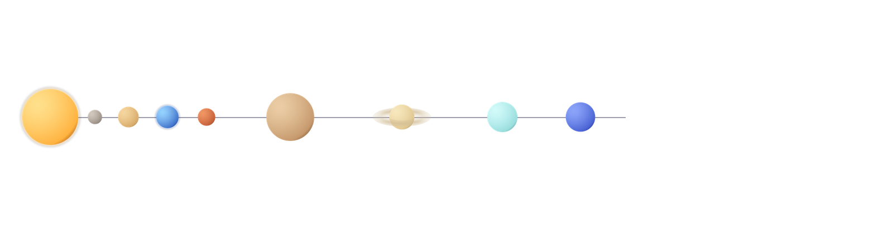

00Uvod u misiju
Posmatrano sa Zemlje, noćno nebo deluje mirno i nepromenljivo — ali iza tog mira krije se neprestano kretanje: planete kruže oko Sunca, meseci kruže oko planeta, a čitav sistem juri kroz galaksiju brzinom od skoro 230 km/s.
Ovaj projekat je nastao kao seminarski rad iz predmeta
Uvod u informatiku, sa ciljem da na zanimljiv i vizuelno
živ način predstavi osnovne činjenice o našem Sunčevom sistemu,
koristeći isključivo HTML i CSS
tehnologije — bez ijedne spoljne slike ili biblioteke.
Sve ilustracije planeta na sajtu su proceduralno generisane
posebno za ovaj projekat.
01Šta ćete pronaći na sajtu
→ 02
Akademska tema
Detaljan pregled nastanka Sunčevog sistema, Keplerovih zakona i tabela svih planeta.
→ 03
Galerija planeta
Vizuelna zbirka svih osam planeta i Sunca, sa kratkim opisima.
→ 04
Kontakt
Forma za pitanja i komentare u vezi sa projektom.
02Sunčev sistem u brojkama
| Podatak | Vrednost |
|---|---|
| Broj planeta | 8 |
| Starost Sunčevog sistema | ≈ 4,6 milijardi godina |
| Najveća planeta | Jupiter |
| Najbliža planeta Suncu | Merkur |
| Prosečna udaljenost Zemlje od Sunca | ~149,6 miliona km (1 AJ) |

03Nastavi istraživanje
Izaberi sledeću destinaciju misije: